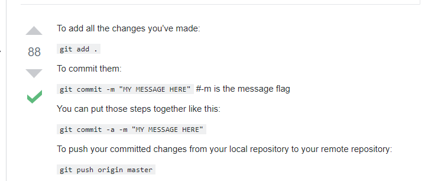
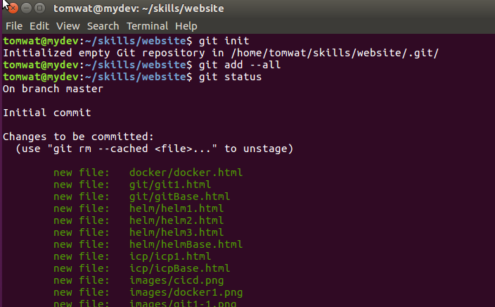
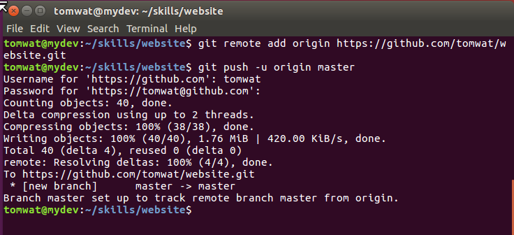
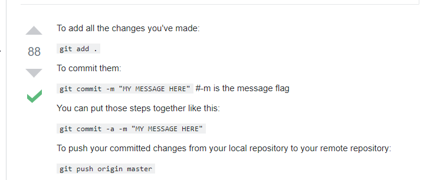
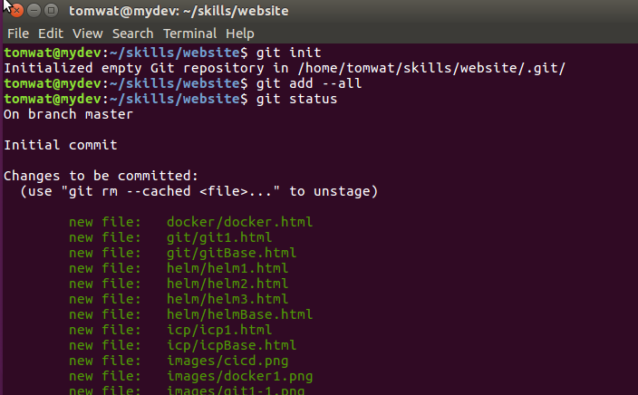
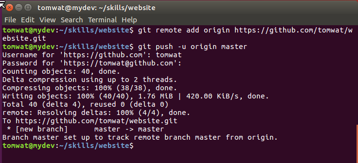

I have Git locally on my workstation, where I develop my website.
I also have my local Git linked to http://github.com where my Kuberenetes can access it.
As I make changes to my website, I will push those to my repository:
https://github.com/tomwat/website.git
One time setup:
$ cd /home/tomwat/skills/myskills/website
$ git init
Initialized empty Git repository in /home/tomwat/skills/myskills/website/.git/
create the remote repository on github.com - tomwat/website
back on workstaion
$ git remote add origin https://github.com/tomwat/website.git
$ git push -u origin master
$ cd /home/tomwat/skills/myskills/website
$ git status
$ git add --all
$ git commit -m "commit message"
now my local repository is up to date
$ git push origin master
username: tomwat
password: 3MTcaddsiSy6MAc


